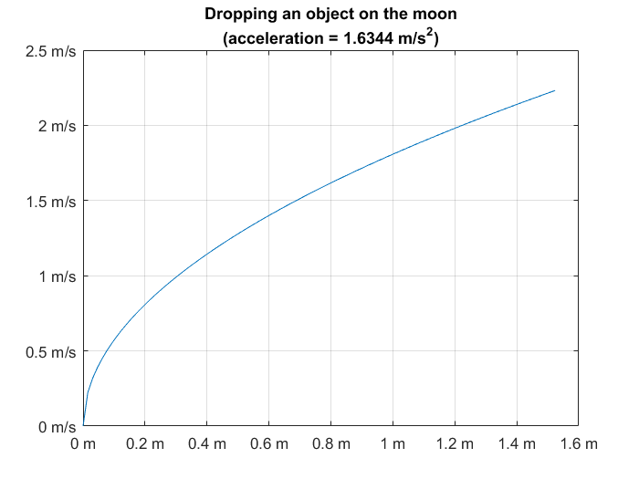
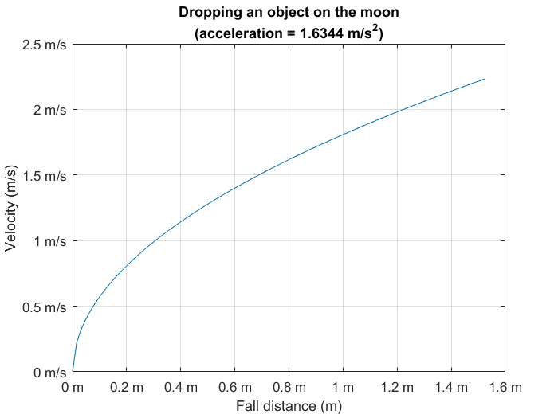

Dimensioned Variable (DimVar) Class for MATLAB - notes and demos
Author: Sky Sartorius.
A DimVar (dimensioned variable) contains both a value (any numeric type) and units (any combination of mass, length, time, etc.). Math operations performed on dimensioned variables will automatically perform dimensional analysis to ensure that units are consistent.
Contents
Basic Use
Step one: Ensure that both the m-files (u.m, unitsOf.m, units.m, etc.) and the directory ..\@DimVar are placed on the current path (or in the current working directory).
To create a variable with physical units information, MULTIPLY by the appropriate DimVar in u. For example, to define a length of 5 inches:
length = 5 * u.in
length = 0.127000000000000 m
The variable will be displayed in base units as defined in the myUnits function. To display in another unit, divide by that unit (this is also a quick way to do unit conversion).
length / u.ft
ans = 0.416666666666667
To convert between units, multiply by the starting unit and divide by the ending unit.
conversionFactor = u.mi^2/u.ft^2;
fprintf('There are %d sq. feet in a sq. mile.', conversionFactor)
There are 27878400 sq. feet in a sq. mile.
More complicated units can be made by combining other units.
mach1 = 340.294*u.m/u.s
mach1 =
3.402940000000000e+02
m
-
s
If you wnat to use the speed of sound at sea level in your application often, you can also edit u.m and add a line to make mach1 available whenever working with units.
Note that there is no such thing as a dimensioned variable with no units. If you perform operations that make the units cancel, a normal variable will be returned.
class(u.s)
ans = DimVar
class(u.W/u.hp)
ans = double
Consistency Enforcement
Math with dimensioned variables is just like numeric variables except that dimensional/unit consistency is enforced. For example, adding two variables having different dimesions will result in an error.
3*u.s + 2*u.kg
Returns an error ("Unit inconsistency in addition").
Many MATLAB functions will not accept dimensioned variables. This is because most non-mathematical functions are only defined for dimensionless arguments.
t = (0:.1:1) * u.s; w = (2*pi)*10 * u.Hz; % y = (3 * u.in)*sin(t); % sin undefined for dimensioned argument t. y = (3 * u.in) * sin(w.*t); % sin function now defined (w*t cancels units).
It can be convenient to define some dimensionless units, for example radians and degrees.
fprintf('The class of u.deg is "%s."\n',class(u.deg)) fprintf('There are %g degrees in one radian.\n',u.rad/u.deg)
The class of u.deg is "double." There are 57.2958 degrees in one radian.
Strings Representing Dimensioned Variables
The static method DimVar.strconv finds the conversion factor that converts from a unit indicated by a string to another unit indicated by a string.
DimVar.strconv('MPa/min','(lbf/cm^2)/hr')
ans =
1.348853658598263e+03
Strings representing physical units can also be converted to DimVar with str2u.
weightGainRate = 6 * str2u('lb/year');
Speed
While writing code using the DimVar class makes code faster to develop, easier to read, and easier to debug, it will slow the code down due to all the calls to the DimVar methods. One good solution to working with the class is to develop the code using the class, but after it's all tested and debugged, add a list at the top of your script as generated by the static method DimVar.unitslist. For this demo file that would be
DimVar.unitslist([mfilename('fullpath') '.m'], '-copy')
u.A = 1 ; % [A^1] u.BTU = 1055.0559 ; % [m^2][kg^1][s^-2] u.Hz = 1 ; % [s^-1] u.K = 1 ; % [K^1] u.N = 1 ; % [m^1][kg^1][s^-2] u.Ohm = 1 ; % [m^2][kg^1][s^-3][A^-2] u.V = 1 ; % [m^2][kg^1][s^-3][A^-1] u.W = 1 ; % [m^2][kg^1][s^-3] u.atm = 101325 ; % [m^-1][kg^1][s^-2] u.cc = 1e-06 ; % [m^3] u.cm = 0.01 ; % [m^1] u.deg = 0.017453292519943 ; % u.ft = 0.3048 ; % [m^1] u.g0 = 9.80665 ; % [m^1][s^-2] u.gal = 0.003785411784 ; % [m^3] u.gram = 0.001 ; % [kg^1] u.hp = 745.69987158227 ; % [m^2][kg^1][s^-3] u.hr = 3600 ; % [s^1] u.in = 0.0254 ; % [m^1] u.kW = 1000 ; % [m^2][kg^1][s^-3] u.knot = 0.51444444444444 ; % [m^1][s^-1] u.lbf = 4.4482216152605 ; % [m^1][kg^1][s^-2] u.m = 1 ; % [m^1] u.mW = 0.001 ; % [m^2][kg^1][s^-3] u.mi = 1609.344 ; % [m^1] u.rad = 1 ; % u.s = 1 ; % [s^1] u.slug = 14.593902937206 ; % [kg^1] u.uF = 1e-06 ; % [m^-2][kg^-1][s^4][A^2] ***List text copied to system clipboard.***
Alternatively, this can be accomplished by using non-DimVars in the myUnits function (see href="matlab:help myUnits">help for myUnits</a).
Basic Examples
Example 1: Use units to calculate the force at the bottom of a long vertical pipe that is capped at the bottom and filled with oil.
pipeInnerDiameter = 4*u.in;
pipeHeight = 30*u.ft;
densityOfOil = 0.926*u.gram/u.cc;
pipeCrossSectionArea = pi*(pipeInnerDiameter/2)^2;
% Find pressure of oil in the pipe using gravitational acceleration, u.g0.
pressurePipeBottom = densityOfOil * u.g0 * pipeHeight;
forceOnPipeBottom = pressurePipeBottom * pipeCrossSectionArea;
Note that each variable holds its value as expressed in SI units. To express these values in different units, divide by the desired unit.
fprintf('Bottom pressure is %g atmospheres. ', pressurePipeBottom/u.atm) fprintf('Force on the bottom cap is %g pounds.', forceOnPipeBottom/u.lbf)
Bottom pressure is 0.819504 atmospheres. Force on the bottom cap is 151.342 pounds.
Example 2: Find the Reynolds number (dimensionless) of an aircraft flying at 100 knots at sea level with chord of 223 cm using a mixture of units.
units;
rho = .002377*u.slug/u.ft^3; % Air density.
V = 100*u.knot;
chord = 223*u.cm;
mu = 28.8*u.gram/u.mi/u.s;
Re = rho*V*chord/mu
Re =
7.853359695994872e+06
Displaying and Plotting
Methods such as disp, num2str, and plot are defined for DimVars.
acceleration = 1/6*u.g0;
fallDistance = linspace(0,5)*u.ft;
disp('Total time:')
disp(sqrt(2*fallDistance(end)/acceleration))
Total time: 1.3656 s
v = sqrt(2*acceleration*fallDistance); [~,xStr,yStr] = plot(fallDistance,v); title(sprintf('Dropping an object on the moon\n(acceleration = %s)',... num2str(acceleration)));
Use the label text to add information.
xlabel(sprintf('Fall distance (%s)',xStr)); ylabel(sprintf('Velocity (%s)',yStr));
Working with myUnits.m and units.m
Changing the Base Unit System
It is possible to work in a non-SI units system. Several common alternatives are provided and can be selected by providing the units.m function in myUnits.m with a string indicating the desired system.
u = units('verbose');
u.Ohm
ans =
1
[meter^2][kilogram]
--------------------
[second^3][ampere^2]
u = units('IPS'); % Inch-pound(mass)-second
u.mW
ans = 3.417136834273669 [in^2][lbm] ----------- s^3
Preferred Display Units
units(..., dispStr1, dispStr2, dispStr3, ...), where each dispUnit is a string corresponding to a field name in the units struct, will display that unit or those compatible with it using the given preferred dispUnit instead of the default base unit or combination of base units.
units SI hp BTU
u.kW
ans = 1.341022089595028 hp
u.kW*u.hr
ans =
3.412141479896942e+03
BTU
units(..., dispStr1, dispUnit1, dispStr2, dispUnit2, ...), where each dispUnit is defined by an existing DimVar in the workspace (with the same base unit system), allows for use of preferred display strings that are not field names of the default units struct (especially useful when desired display is not valid for a struct field name).
units('SI',... 'W-hr', u.W*u.hr,... '°K', u.K,... char(937), u.Ohm,... 'µF', u.uF,... 'ft³', u.ft^3)
u.BTU
ans = 0.293071083333333 W-hr
u.V/u.A
ans =
1
Ω
u.gal
ans = 0.133680555555556 ft³
units(..., dispUnits) is the same as above, except the dispStr, dispUnit pairs are contained in the n x 2 cell array dispUnits. However, if dispUnits is a string, this signals the use of a special predefined set of preferred display units. To use the standard set of common derived SI units for force, pressure, energy, power, etc.:
units SI -SI
u.N
ans =
1
N
u.atm
ans =
101325
Pa
u.V*u.A
ans =
1
W